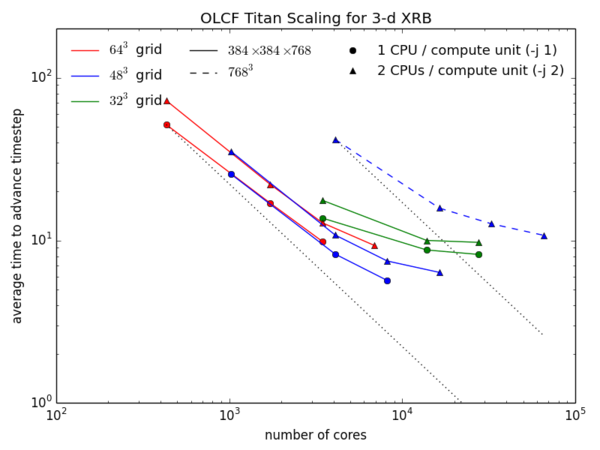

∗ Solution methodology
The low Mach number formulation approximates flows in hydrostatic equilibrium, filtering out the sound waves. The fluid state is decomposed into a 1D, hydrostatic base state and a perturbational Cartesian state. A constraint on the divergence of the velocity field captures the compressibility due to background stratification and local heating/diffusion sources. The resulting system takes the form of hyperbolic PDEs for mass, momentum, and enthalpy (energy) conservation, and the elliptic constraint on thevelocity. The algorithm utilizes a second-order accurate approximate projection method, developed first for incompressible flows. Fluid quantities are advected using an unsplit Godunov method, with reactions incorporated via operator splitting. The provisional velocities are then projected onto the space that satisfies the divergence constraint. The projections involve elliptic solves, computed using a multigrid algorithm. Adaptive mesh refinement is used to achieve high spatial resolution.
∗ Code & parallelism
Maestro is written primarily in Fortran 95 and is parallelized using MPI and OpenMP. The adaptivity and message passing is managed by the BoxLib library. Distribution of grid patches to nodes using MPI provides a natural coarse-grained approach to distributing the computational work, while threading of loops over grids using OpenMP provides effective fine-grained parallelization.
The code is highly portable, and regularly runs on the titan at OLCF, hopper and edison at NERSC, and blue waters at NCSA (at the low end, it has even run on a Raspberry Pi). The only requirements are a Fortran and C compiler (the GCC suite is best). If you wish to run in parallel, then an MPI library is needed.
Parallel performance depends on having enough work on each processor to balance the communication costs. The figure below shows strong scaling for 2 different problem sizes (and 3 different domain decompositions) for an X-ray burst simulation on the OLCF titan machine.

For each point, a single grid was assigned to each MPI task, and threads were used to distribute the work on this grid across the processors on the node. For reference, a titan node has 16 cpus arranged into 8 compute units, but two cpus share a floating point unit on each compute unit. For this strong scaling test, we see that once the problem is spread sufficiently thin across the cores, we become work-starved, and the communication costs dominate. The main cost at the large core counts are the two linear solvers (a cell-centered and a node-centered multigrid solver) that Maestro uses to enforce the elliptic constraint on the velocities.